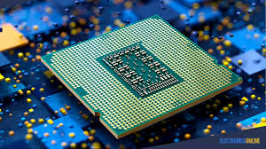

¿Qué es un Procesador?
El procesador, también conocido como Unidad Central de Procesamiento (CPU), es el cerebro del computador. Es el componente encargado de ejecutar instrucciones y procesar datos provenientes del sistema operativo, los programas y el hardware. Cada vez que realizas una acción en tu computadora, como abrir una aplicación o guardar un archivo, el procesador interpreta esa orden y coordina los recursos del sistema para ejecutarla. Cuanto más rápido y potente es un procesador, mayor es la capacidad de respuesta del equipo. Los procesadores actuales cuentan con múltiples núcleos, lo que les permite ejecutar varias tareas al mismo tiempo (multitarea). Además, su rendimiento se mide en GHz (gigahercios), y puede variar según la generación o arquitectura del chip. También tienen una memoria interna llamada caché, que almacena datos de uso frecuente para acceder a ellos más rápido. En resumen, el procesador es esencial para el buen funcionamiento de un equipo, ya que sin él, ninguna acción podría realizarse.
Más información Ejemplo de procesador moderno.
¿Qué es una Tarjeta Gráfica?
Una tarjeta gráfica, también llamada GPU (Unidad de Procesamiento Gráfico), es un componente que se encarga de generar y procesar las imágenes que ves en la pantalla. Aunque la CPU también puede realizar tareas gráficas básicas, la GPU está especialmente diseñada para manejar gráficos complejos, como los de videojuegos, programas de diseño, edición de video o modelado 3D. Esto permite descargar trabajo del procesador y mejorar el rendimiento visual del equipo. Existen dos tipos principales de tarjetas gráficas: integradas y dedicadas. Las integradas están incorporadas en el procesador o placa base y son suficientes para tareas básicas. Las dedicadas, en cambio, son componentes separados con su propia memoria (VRAM) y están diseñadas para trabajos que requieren un alto poder gráfico. Por eso, son fundamentales en computadoras destinadas a juegos, animación o edición profesional.
Más informaciónModelo de tarjeta gráfica potente para gaming.
¿Qué es una Placa Madre?
La placa madre o motherboard es el componente principal de una computadora, ya que conecta y permite la comunicación entre todos los demás componentes: el procesador, la memoria RAM, la tarjeta gráfica, los discos duros, entre otros. Es como el sistema nervioso del computador, encargado de distribuir energía y datos entre las partes que forman el equipo. Cada placa madre tiene ranuras y conectores específicos que determinan qué componentes puedes instalar y qué tipo de rendimiento puedes alcanzar. Además, contiene el BIOS o UEFI, un programa que permite configurar y controlar aspectos básicos del sistema antes de que se inicie el sistema operativo. En pocas palabras, sin la placa madre, los demás componentes no podrían trabajar juntos.
Más informaciónEjemplo de placa base moderna compatible con AMD.
Memoria RAM
La memoria RAM (Random Access Memory) es la memoria de acceso aleatorio y tiene como función principal almacenar temporalmente los datos y programas que están en uso en un momento determinado. A diferencia del disco duro, la RAM no guarda información de manera permanente; todo lo que contiene se pierde al apagar la computadora. Su propósito es agilizar el acceso a datos, permitiendo que el sistema funcione de forma fluida y rápida. Cuanta más RAM tenga una computadora, más tareas podrá realizar al mismo tiempo sin perder velocidad. Por eso es importante contar con suficiente memoria para abrir múltiples aplicaciones, navegar por internet o jugar sin que el sistema se vuelva lento. La RAM trabaja en conjunto con el procesador y el disco para ofrecer un rendimiento equilibrado y eficiente.
Más informaciónMódulo de memoria RAM DDR4.
Componentes Principales de un PC
| Datos del producto | Detalles del producto | ||
|---|---|---|---|
| Componente | Función | Precio estimado | Marca recomendada |
| Procesador | Ejecuta instrucciones | $150 - $500 | Intel / AMD |
| Tarjeta Gráfica | Procesa imágenes | $200 - $1200 | NVIDIA / AMD |
| Placa Madre | Conecta componentes | $80 - $300 | ASUS / MSI |
| Memoria RAM | Almacena datos temporales | $40 - $150 | Corsair / Kingston |
| Disco Duro / SSD | Almacenamiento | $50 - $200 | Samsung / WD |
| Fuente de Poder | Suministra energía | $50 - $150 | EVGA / Corsair |
| Gabinete | Protege componentes | $40 - $120 | NZXT / Cooler Master |
Lista de periféricos esenciales
- Teclado
- Ratón
- Monitor
- Altavoces
- Micrófono
- Cámara web
- Impresora
- Escáner
- Auriculares
- Joystick
Video: ¿Cómo armar una PC?
Video explicativo sobre cómo ensamblar una computadora paso a paso:
Compra tus componentes en PComponentes
Haz clic en la página de PCcomponentes para ver los componentes y precios disponibles.